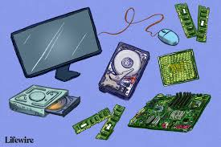

M ike C C C omputer C C C
C C enter
Operating System
If your Computer is experiencing Operating Systems failure, if you need an update, or Settings
Do you want to upgrade from one version of windows to another, or from windows to linux and vice versa
Malware and Virus
For Computer malware and Virus issues.
Hardware issues
For any hardware problem; second-hand or brand-new. We are available
Others...
We offer training for Computer maintainence and repair, internships for university students.
24hr On site Services Computer Analysis Computer Analysis Computer Analysis Computer repair Solution to internet problems Affordable, reliable and Fast